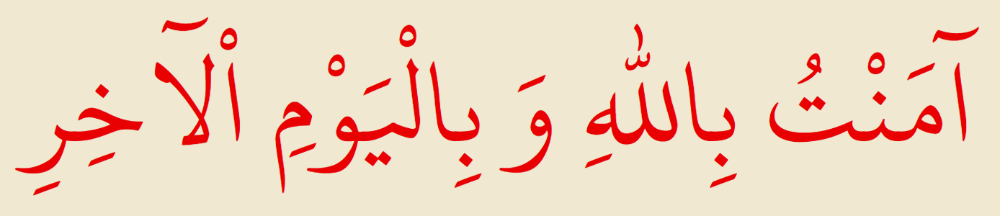
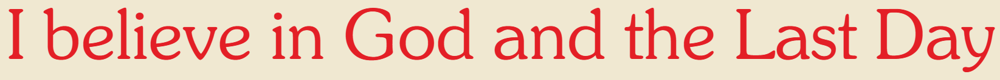
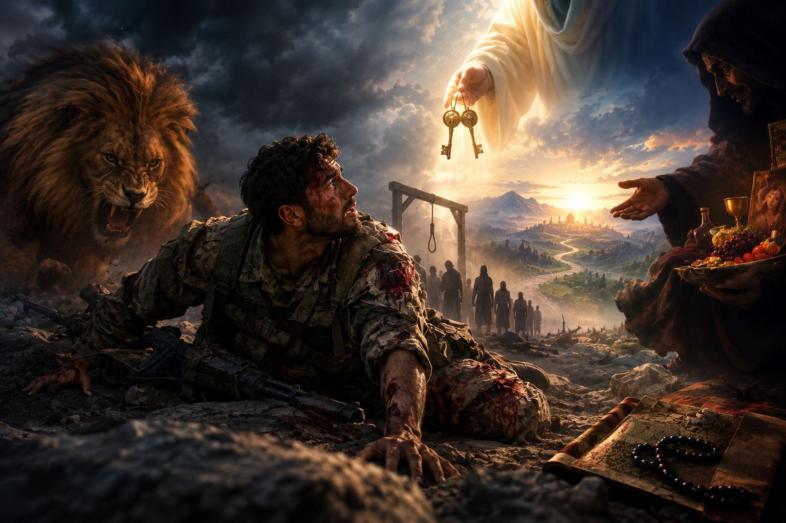

The Seventh Word of The Words by Imam Said Nursi is one of the most concentrated explanations of the human condition in the early part of the Risale-i Nur. It focuses especially on belief in God and the Hereafter, and explains how these beliefs transform the way a person understands life, death, suffering, weakness, and the future.
Imam Nursi presents the whole discussion through a powerful soldier analogy.
Imagine a soldier on a battlefield and examination ground.
He finds himself in an extremely difficult situation:

In other words, the soldier represents the human being.
A compassionate guide, described in the analogy like Khidr, comes to the soldier.
He gives him two extraordinary talismans:
"I believe in God."